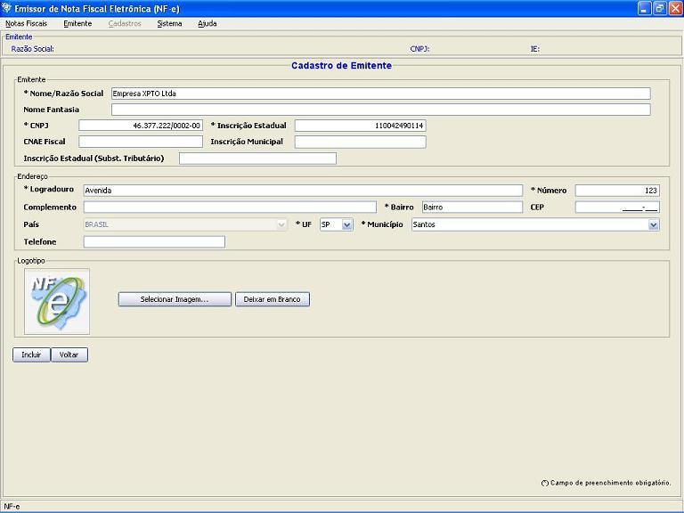
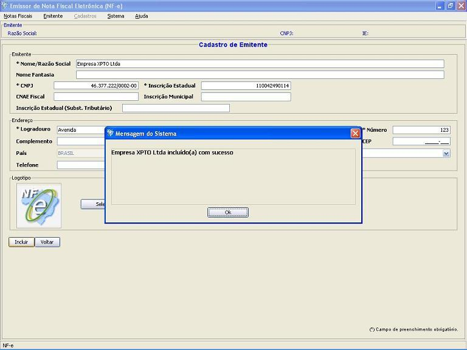

Software Emissor NF-e
Inclusão
de novo emitente
Opção de Inclusão de novo emitente.
- Acessar a tela de cadastro de
emitente através do menu Emitente
-> Selecionar Emitente ou através da
tela inicial na abertura do aplicativo
- Na tela de
cadastro de emitente, acessar
a
opção Incluir
- Na tela de
Inclusão de emitente, preencher
corretamente os campos
do emitente
- Após
o preenchimento dos campos corretamente,
selecionar a opção Incluir
Preencher corretamente com os dados para a inserção:

O Software informará o sucesso da operação de inclusão:
